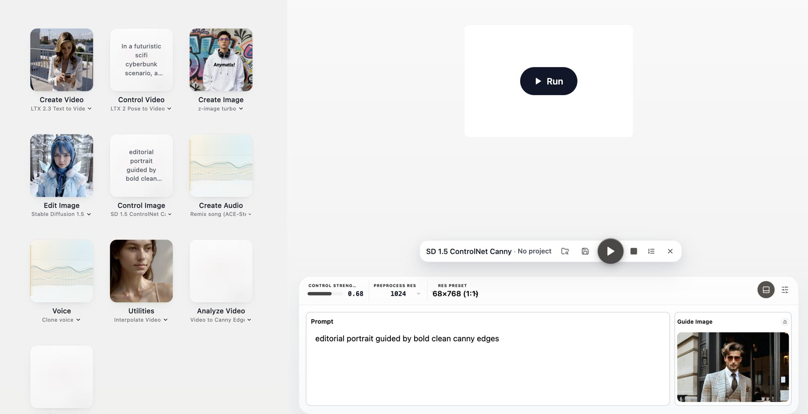
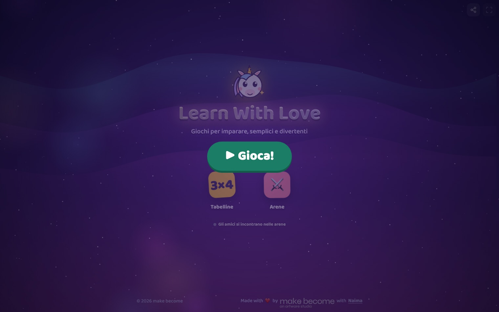

I make things. Complex things. And I make them become: beautiful, simple, useful.
Researcher and AI architect. Maker of Anymatix and NAIMA, co-creator of VoxLogicA.
Research at the Formal Methods and Tools lab of ISTI–CNR, Pisa: papers and teaching at vincenzoml.github.io.
work
-

01Anymatix
Desktop app for generative image and video work: every step is a card you link, group and reuse.
-
 02
02NAIMA
Planned, tested, proven: formal methods and software engineering for everyone who builds with AI.
-
 03
03VoxLogicA 2
Spatial model checking for medical images, rebuilt for hybrid AI: logic and neural networks in one auditable plan.
-

04Learn With Love
Small games for learning, with a unicorn for a friend. Free, no ads, no personal data beyond a first name.
small utilities